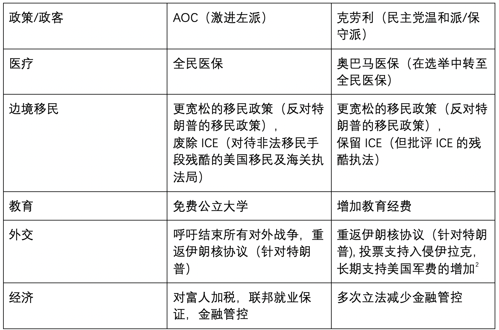
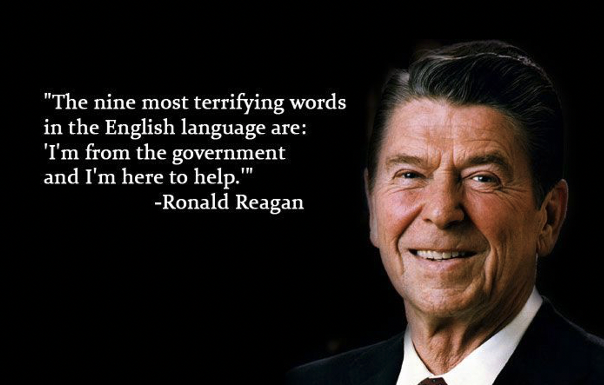
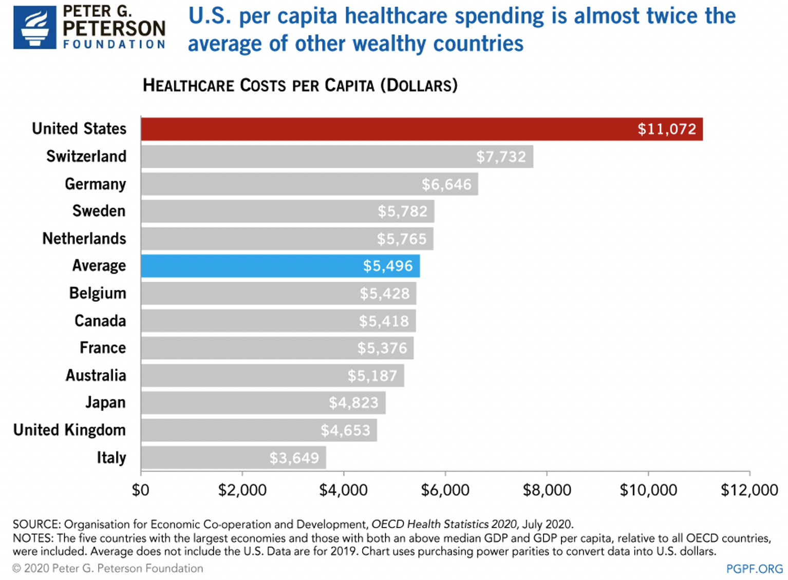
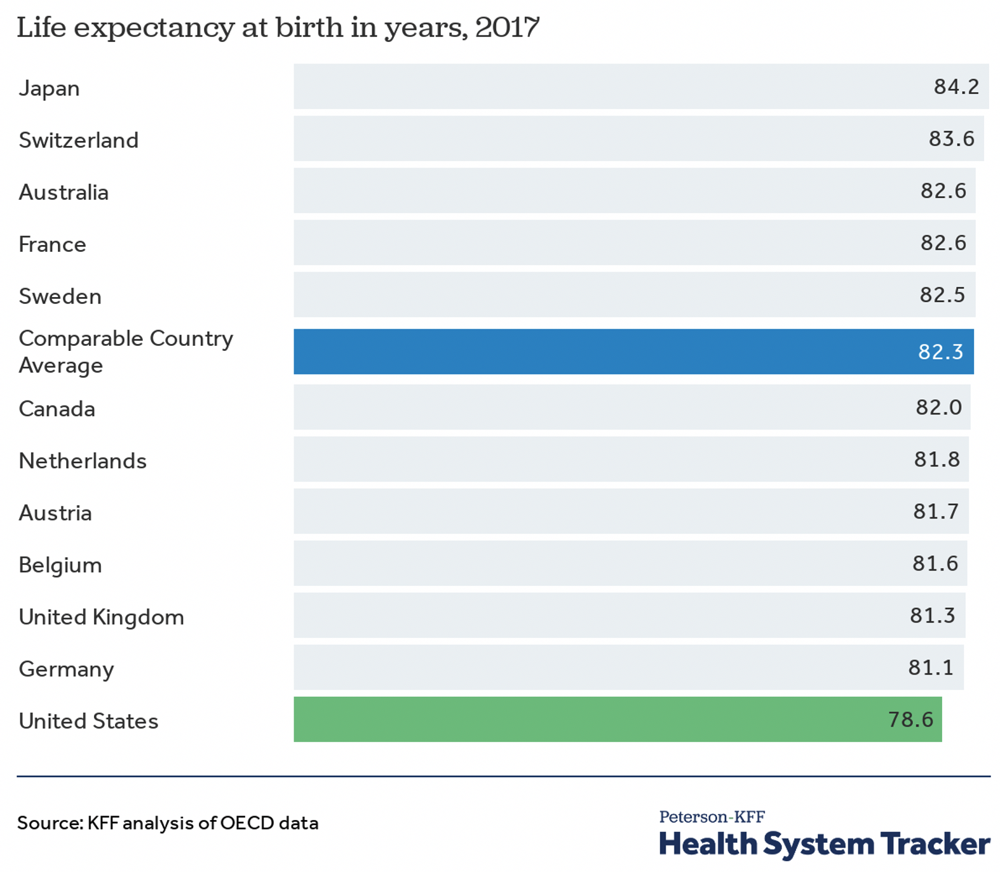

“定义建制派 Establishment”
在美国的政治中，存在着一个被称作“建制派”（Establishment）的政治精英阶层。他们身居高位，主张维护现有体制和权力结构。约瑟夫克劳利（Joe Crowley）就是这样一位建制派的代表。56岁的他已经在纽约第十四选区连任了10届众议员。到2018年时，他已经是众议院超过两百位民主党议员中排名第四的领袖人物，克劳利甚至已经开始谋求起了议长的位置，成为了南希佩洛西的接班人选。自从2004年开始，他在民主党初选中就没有对手，直到2018年AOC的出现。
如果你对美国近两年的政治有所了解的话，那么你一定听说过Alexandria Ocasio-Cortez（AOC）的大名。在2018年的民主党初选中，这位寂寂无名的28岁拉丁裔女性横空出世，一举击败了建制派精英约瑟夫克劳利，成为了众议员。本系列文章将以AOC和克劳利的这场选举为例，介绍建制派如克劳利如何长期保持自身权力，以及AOC这样的左翼反建制派如何拿下这场惊人且不易的胜利。

2018年轰动一时的纽约第十四选区民主党初选，政治新人AOC（右）爆冷击败老牌政客克劳利（左）
在前三篇文章中，我们介绍了克劳利的竞选优势（AOC的劣势）。首先，AOC想要进入国会，就必须进入垄断美国政治的两党之一，她于是参加了民主党的初选，直面已经连任了十届众议员的克劳利。作为民主党建制派，克劳利拥有强大的人脉，收获了大量知名政客和政治组织的背书。同时，克劳利还有金钱优势，通过自己和大企业的密切关系，募到了超AOC十倍的竞选资金。 但是，尽管在名望，人脉和资金上都远不如克劳利，AOC也有自己的优势：受欢迎的左翼政策，反建制派的形象，以及努力的竞选团队。本文将介绍AOC的第一大优势，她受欢迎的政策主张。
受欢迎的左翼政策
虽然共和党和民主党两党垄断政治、关键人物的背书能影响选举的走向、90%以上的众议员选举都是花钱最多的候选人获胜，美国也还是民主体制。民主政治的本质就是选出大众支持的政策，而人民选的政客只是执行政策的工具。人民喜欢什么政策，人民就投支持该政策的政客，这就是民主的核心，没有什么高深的逻辑。AOC的第一大优势就是她所推崇的左翼政策的受欢迎程度。
首先声明：和前两篇文章一样，笔者不评价政策的优劣，因为对政策的评价取决于个人的政治立场，甲之蜜糖，乙之砒霜。但是，和政策的优劣不同，政策的受欢迎程度是很客观的，可以直接用数据和报道衡量。
本文谈的是政策，那么政治结构上的标签（建制派克劳利—反建制派AOC）就不太适用了。在美国政治光谱上，AOC被定性为进步派（Progressive），民主社会主义者（Democratic Socialist）,她的对手称她为激进左派（Radical Left，Radical带有贬义）。克劳利则是民主党主流（Mainstream Democrat），温和派（Moderate），或保守派（Conservative），他的对手则指出他和华尔街过于密切的联系，称他为社团主义者（Corporatist，大集团的支持者）。笔者用“进步派“称呼AOC，而用”温和派“称呼克劳利。相比于AOC，克劳利在经济问题和社会问题上都更加保守。
AOC和克劳利政策粗略对比
一眼望去，AOC在所有的政策领域都要比克劳利更激进，更左
AOC和全民医保
医疗是民生大事，在美国也是至关重要的经济议题。首先不管是AOC还是克劳利，亦或是更保守的共和党，他们都认为现有的医保体系需要改进。据统计，三分之二的破产美国人指出高昂的医疗费用是他们破产的重要原因。 美国每年有四万五千人因为没有医保而病死，而四分之一的美国人表示他们因为经济条件延迟了医疗计划。 而AOC和克劳利的政见区别在如何改进上。
和所有的进步派一致，AOC的核心政策主张包括了全民医保（Medicare For All）。她猛烈地批评美国现有的医保系统，认为私有的医疗保险公司收费贵而服务差，指出和企业雇佣关系相关联的医疗保险合同使雇员不敢辞职，还抨击了美国药企在美国的定价高的现象。AOC崇尚其他发达国家的全民医保体系，呼吁在美国建立相似的机制，将老年人医保（Medicare）扩大到全体国民，使所有美国人民都能承担得起医疗费用。AOC对美国现有医保体系的批评和对全民医保的推崇是有广泛群众基础的。全民医保是一个非常受欢迎的政策主张，在2018年的民调中长期保持70%的支持率。 哪怕是在普遍具有保守倾向的共和党选民中，全民医保的支持率超过了50%。 AOC所在的民主党中，更是有85%以上的选民支持全民医保。
AOC竞选团队的宣传海报，直截了当的展示她对全民医保的追求
作为一位民主党温和派，克劳利主张延续同为温和派的奥巴马所建立的奥巴马医保，政府补贴雇主或个人医保费用，但雇主和个人必须购买私有公司的医疗保险。相比于全民医保，奥巴马医保对私有的医保公司更加友好，而覆盖人群和价格也不如全民医保的全部覆盖和全员免费来得干脆。因为特朗普任期中没有对美国医保体系作出实质性改革，2018年奥巴马医保支持率达到新高，但也只有50%左右，民主党对其的支持为75%，而共和党更是不到30%。
除了民调数据的对比，克劳利的政策转变也体现了全民医保比奥巴马医保更受欢迎。2017年，克劳利和民主党众多高层还都表示了反对全民医保和保持奥巴马医保的主张。 一年之后，面对AOC的压力，克劳利改口表示支持全民医保，将他的名字加到了国会全民医保法案（未通过）的共同发起人名单中。 克劳利敏锐地认识到了全民医保远比他所支持的奥巴马医保更受欢迎，而他的对手AOC凭借着全民医保的欢迎程度对他造成了严重的威胁。于是，克劳利“城头变换大王旗”，放弃了他长期以来对奥巴马医保的支持，成为了民主党建制派中少有的支持全民医保的政客。克劳利政策的转变体现了全民医保的受欢迎程度，但该转变不一定能为克劳利带来多少好处。毕竟，支持全民医保的大众相比于相信临时改口的克劳利，肯定更愿意支持始终如一的AOC。
AOC在推特上多次指出，相比于克劳利，她才是全民医保的旗手
AOC和Abolish ICE
除全民医保外，AOC另一个受欢迎的政策主张是废除ICE。ICE，即美国移民及海关执法局，是美国国土安全部下属的一个执法部门，2003年因反恐而成立。其主要负责识别、调查和处置美国移民、海关领域的违法犯罪活动，例如处理和遣返非法移民、走私、贩卖等案件。近年来，随着美国社会对非法移民问题的关注度提高，特别是特朗普总统任内对非法移民加大抓捕和遣返力度后，ICE暴力且冷酷的执法手段受到了广泛的批评。2019年民调显示，在美国十六个联邦机构中，ICE的支持率倒数第一，只有42%，不支持率为54%。 民主党和共和党对待ICE的态度截然不同，ICE在民主党人中的支持率只有19%，而在共和党人中有70%。AOC所在的纽约州第14选区人口中48%为拉丁裔，77%为少数族裔，反对ICE的呼声更是巨大。通过呼吁废除ICE以及执行更人道的移民政策，AOC自然受到了14选区民主党选民的支持。
ICE的看守所，儿童被从父母身边剥夺，关押在铁笼中，拥挤且只有锡箔纸保暖，
奥巴马和特朗普当政期间这样的问题都非常严重
克劳利也不满ICE对待非法移民的残酷手段，甚至称其为法西斯组织。 言辞上克劳利和AOC很接近，但是克劳利在政策上却还是不如AOC来得受欢迎。原因有三：首先是克劳利长期身在国会，却并未对ICE这个联邦机构施加影响。其次是克劳利三缄其口，不肯明确说出他对ICE的处理方案，而AOC直接了当地说ICE已经无药可救，必须废除。最后，废除ICE和与之相关的移民问题是AOC政策主张的核心之一，她本人也是不断为非法移民的人权发声，在初选开始的前几天还飞到德州一处ICE的非法移民看守所游行抗议。在废除ICE和处理非法移民问题上，不论是政策的提议还是表达，AOC都比克劳利更受民主党选民的支持。
2018年6月25日纽约初选的前一天，AOC在德州游行反对ICE，可见她废除ICE的决心
克劳利的政策表达
说完政策的欢迎程度，再来对比一下两位候选人对各自政策的表达，毕竟一个人的政策再受欢迎，如果不说出去让选民知道，也是无用功。
相比于AOC旗帜鲜明的表达方式，克劳利的政策主张就显得笼统了。在医保问题上，相比较AOC简单明了的全民医保（Medicare For All），克劳利只能用“能负担起的医保”（Affordable health care）来形容他的医保政策。AOC说废除ICE,克劳利说要改革该机构。AOC说免费公立大学（Free Public College），克劳利说他能给选民”获得高等教育的希望“。 不光是政策不如AOC受欢迎，克劳利对他政策的空洞宣传也使他错失了吸引选民的机会。
在医疗，教育和处理移民等问题上，克劳利试图用空泛的词汇搪塞过去。但在对共和党总统特朗普的攻击上，克劳利却重拳出击，购买了大量广告宣传他在国会对抗特朗普白宫的领导力。在这些广告中，克劳利不断指出特朗普的威胁，并宣称他将在胜选后将阻止特朗普的”暴政“。对克劳利来说，这场选举有全国政治意义，作为民主党的领袖人物，克劳利在某种程度上是在和特朗普竞选。 事后来看，克劳利对特朗普威胁的不断强调是一个重大的策略错误。不管是克劳利还是AOC，只要是民主党议员都会反抗特朗普，所以克劳利对特朗普的攻击并不能给他带来更多的支持，反而浪费了他的金钱资源，也浪费了他宣传其他政策的机会，做的是无用功。AOC看得就很通透：我们不光要对抗特朗普，我们还必须解决那些使特朗普崛起的问题。（“It’s not enough to fight Trump. We have to fight the issues that made his rise in the first place.”）这些问题自然就包括昂贵的医疗和教育，移民问题上的种族主义等等，所以AOC认为进步派政策的执行（而不是选出克劳利这位特朗普“克星“）才是对抗特朗普的最佳策略。
当然，克劳利选择强调自己对抗特朗普的领导力也不光是他和他竞选团队的一时失策，也有其必然性。第一，克劳利其他的政策并没有AOC受欢迎，强行宣传他的政策效果不佳，反而会让选民更关注他不如AOC的点。第二，克劳利在政策的宣传上向来含糊其辞，他和特朗普的所谓对抗就是这样一个无关政策的模糊宣传口径。本来是他和AOC谁的政策更佳，现在变成了克劳利和特朗普两个政治人物的对抗（AOC都不见了）。第三，作为民主党众议院的四号人物，连任十届的克劳利对AOC这样的草根还是持有轻视的态度，他更加着眼于全国，他应该是真切希望在选举后能够成为民主党国会的领袖对抗特朗普白宫。
克劳利在竞选广告中大力攻击特朗普，但和他竞选的人并不是特朗普
进一步分析AOC的政策优势
上文中我们提到，AOC的政策普遍比克劳利的更左更激进。过于激进和受欢迎似乎并不相容，难道不应该是温和的政策更受欢迎吗？这个问题有两个解释：一是AOC的政策其实并不激进，反而是温和的政策，二是克劳利的政策并不温和，是金钱政治的产物，是过分妥协的结果。
和克劳利相比，AOC的政策主张一味要求给民众更多福利，似乎太过于理想/幻想了。但事实上,AOC的政策并不激进。从历史上看，1900年的总统西奥多罗斯福在他的新国家主义（New Nationalism）设想中就提出过全民医保。他的亲戚总统富兰克林罗斯福推行的新政（New Deal）中，全民医保就是计划之一，最后因为当时保守政客的阻拦而无缘最终方案。随着新政时代结束，全民医保的设想逐渐淡化，但是罗斯福之后的杜鲁门，艾森豪威尔，肯尼迪都公开称赞过该政策的效率高和覆盖面广，也都有推动立法的意图。 60年代的林登约翰逊推行伟大社会（Great Society）政策，将老人和穷人都纳入政府的医保体系，离全民医保更近一步。但是80年代新自由主义兴起，自由市场经济的原则成为主流，由政府主导的全民医保在美国政界逐渐丧失拥趸。由此可见，AOC的全民医保并不是什么天方夜谭，反而是代表了美国60年代前的重要政策主张，重申了强势政府（Affirmative State）这一理念。
富兰克林罗斯福提出的第二权利法案，医保是所有美国人的权利
里根是新自由主义的旗手，推崇自由市场经济而反对政府福利项目，
他的名言：英语里最恐怖的九个字：我是政府派来帮忙的
不看历史看当代的话，美国对比西方其他发达国家也能证明全民医保并非极端左翼政策。除美国外，西方所有发达国家都有不同程度的全民医保政策。一项英联邦基金的研究表示，美国的医疗系统在和澳大利亚，新西兰，德国，英国，加拿大，荷兰的比较中排名最后，而该六国均为全民医保制度。 美国的医疗体系花费大而效率低，人均医疗花费为其他发达国家平均的两倍，而人均寿命则在发达国家中常年垫低。美国人早就不满当下的医保制度，也不满足于奥巴马医保这样的小修小补，他们着眼世界，看到发达国家清一色全民医保，自然也想要相同的政策。AOC的全民医保主张不光不极端，和西方其他国家相比，可以说的上是非常温和了。
所有发达国家中，美国是唯一一个没有全民医保的
美国人均医疗费用领先所有发达国家，为平均值的两倍
如此昂贵的医疗费用下，美国人的预期寿命落后于几乎所有发达国家
有人可能会问，欧洲国家税重福利高，全民医保会不会让美国政府和民众负担变重呢？全民医保的费用主要由三处来源：一是政府可以统一和医院药企谈判，减少看病买药花费；二是全民医保不需要有医保企业这个中间商赚差价；三是征收富人税。根据国会山报（the Hill） 2020的报道，哪怕是保守派智库Mercatus Center的研究都表明，全民医保相比于美国现有的私立和奥巴马医保体系，不光不用额外花费，还可以在10年内节省美国政府和公民约2万亿美元。 实行全民医保确实需要加税，但是进步派普遍承诺只加富人的税，退一万步说，如果真的加到普通民众身上，那全民医保加的税和民众交给私有企业的医保费用也没本质区别。
还有人会问，欧洲国家的医疗系统太官僚，全民医保会不会降低美国医疗的效率？但是，美国的私立医保系统并没有想象中的高效。事实上，美国医生应对官僚主义的时间要远超其他西方国家，福布斯2016年的报道称美国医生大约要花三分之二的时间在填写各类文件上。 此外，大量骗局存在在美国的医疗系统中，2009到2019 年，每年的医疗诈骗数额都在20亿美元以上。 对于美国民众来说，他们购买医保后往往需要和医保公司斗智斗勇，仔细查看各类条目，可能还要找律师或专家来检查，以免看病看完被医保中隐藏的款项（如Co-pay，Deductible）给骗了。
全民医保是新政和“伟大社会”理念的延续，在其他西方国家也不乏成功案例，执行后预计不比现有私有医保系统更昂贵繁琐，其在美国收获大众的支持理所当然。和全民医保相比，克劳利原先支持的奥巴马医保反而是一个过分保守的政策。奥巴马医保（the Affordable Care Act）最早是由美国新右派的传统基金会（heritage foundation）所提出，共和党90年代的领军人物纽特金里奇（Newt Gingrich）支持这个政策，奥巴马2012年总统竞选的对手罗姆尼在马萨诸塞州当州长时就启用了这个政策，奥巴马医保也被部分媒体戏称为罗姆尼医保。 民主党总统奥巴马拿着一个共和党的医保政策，本来打算是和共和党妥协的，最后通过方案的时候共和党所有议员一票都没有投给奥巴马医保（共和党彻底反对自己曾经支持的政策，可见两党的极端对立）。奥巴马医保还是金钱政治的产物，美国医保昂贵的问题没有得到解决，所谓的廉价医保COBRA依旧需要每月数百美元，政策所针对的穷人负担依旧承重；奥巴马医保的覆盖面也不尽人意，执行到2016年仍有两千七百万美国人没有医保。 该政策的最大问题就是强制公民购买私有公司的医疗保险，从此私有医保公司和药企有恃无恐，维持价格的同时获得了政府的补贴，赚的是盆满钵满。民主党的精英们如克劳利可能认为平衡了企业和民众利益的奥巴马医保会大受欢迎，但是在美国大众中，覆盖面低而价格昂贵的奥巴马医保评价非常一般，常年在50%上下，远不如70%支持率的全民医保来得主流。
2020年民主党总统候选人中，桑德斯，沃伦支持全民医保（Single Payer，和其他西方国家一样，政府为所有人买单），
包括拜登哈里斯在内的其他候选人支持公共选择（Public Option，公民可以选择政府的医保或是私有医保），没有一个人提出延续奥巴马医保，奥巴马医保的受欢迎度可见一斑。
总结
综上所述，AOC的第一大优势就是她受欢迎的政策。这看似有点反常识，明明极端左翼的政策应该不如克劳利的民主党主流政策那么受欢迎，但是从全民医保和废除ICE两个例子中我们可以看出，美国人民其实“很左“，是代表他们的两个党”太右“。当你给出AOC和克劳利两个选择时，他们更认同AOC的政策主张。在民调上，AOC的全民医保政策大受欢迎，逼得克劳利向左转，都不得不放弃了他维持奥巴马医保的主张，跳槽到了他2017年发言反对的全民医保阵营。废除ICE看似极端，其实ICE的功能多余和手段残酷早就不得民心。 和AOC旗帜鲜明的进步派政策相比，克劳利的政策主张中庸，其表达又模糊圆滑，还浪费了大量资金发广告空洞地宣扬自己对抗特朗普的领导力，最终无法撼动AOC的政策优势。
最后让我们管中窥豹，从AOC的政策优势中看出美国政治的转向：为什么以AOC为代表的进步派能取得胜利，为什么桑德斯能在全国范围的2016和2020年大选中展现出极高的人气，民主选举政策为王，进步派的政策对选民的吸引力正是其中关键。

用户甲
December 18, 2017来自用户甲的评论，来自用户甲的评论，来自用户甲的评论，来自用户甲的评论，来自用户甲的评论，来自用户甲的评论，来自用户甲的评论，来自用户甲的评论，来自用户甲的评论，来自用户甲的评论，来自用户甲的评论，来自用户甲的评论，来自用户甲的评论，来自用户甲的评论，来自用户甲的评论，来自用户甲的评论，来自用户甲的评论。